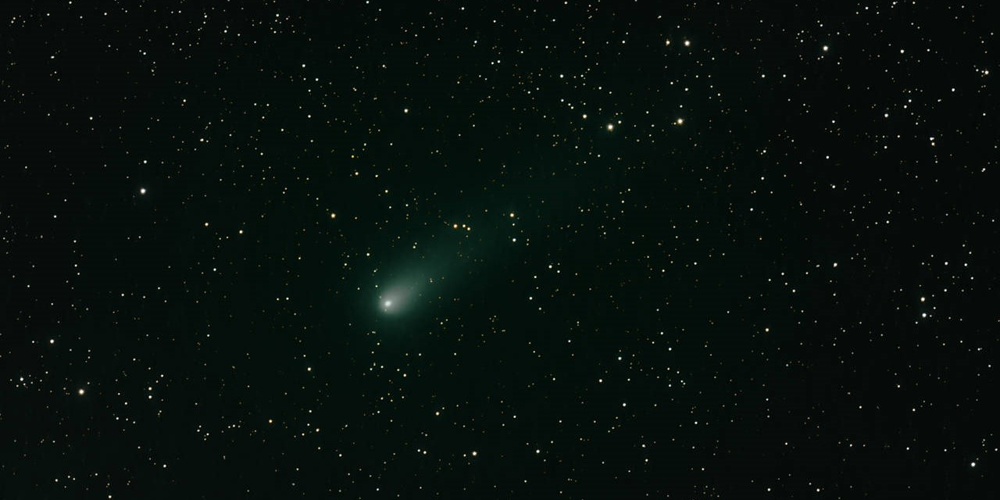
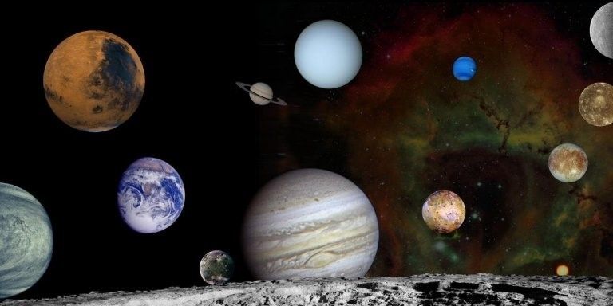

Nishimura, el nuevo cometa que es visible a simple vista
20 DE AGOSTO DE 2023
El cometa Nishimura (C/2023 P1), nombrado así en reconocimiento a su descubridor, se aproxima a la Tierra. Hoy es visible con pequeños telescopios y en pocos días también con prismáticos de 7x50 o 10x 50.

Descubre el Sistema Solar
15 DE AGOSTO DE 2023
Conoce todos los planetas y misterios que se esconden en nustro sistema solar y aprende a localizarlos fácilmente en el cielo nocturno